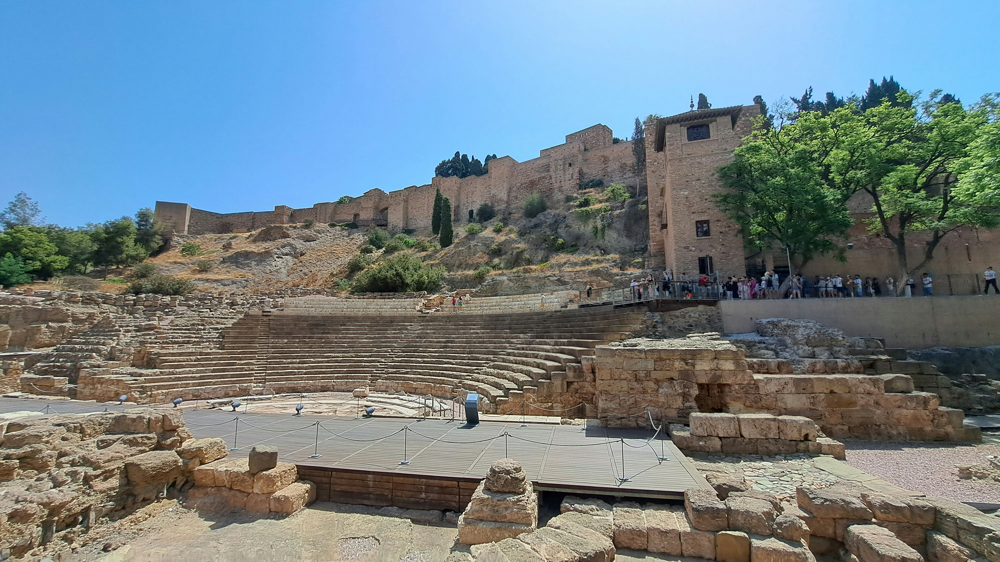
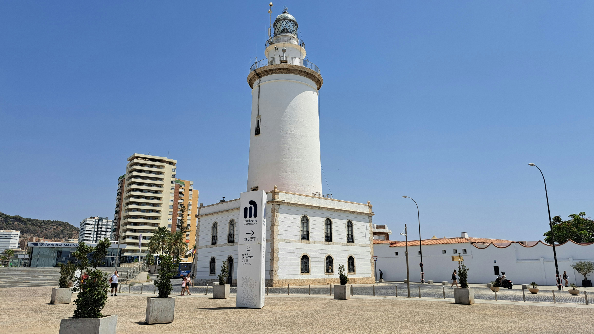
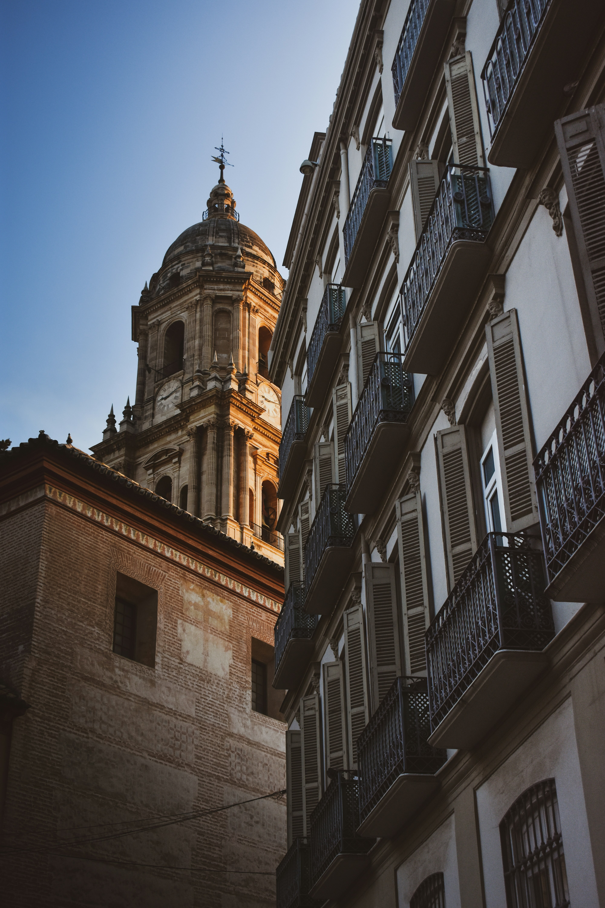
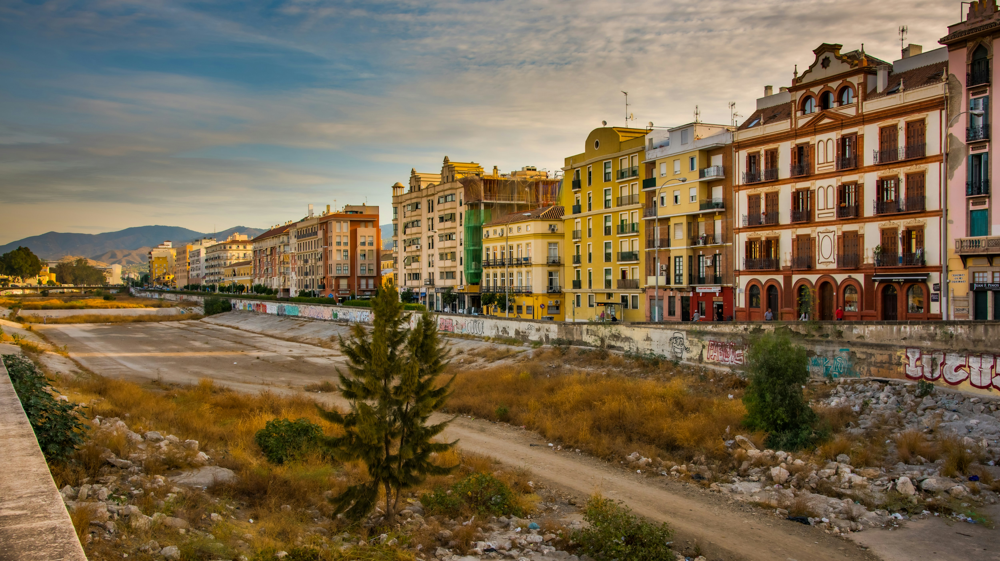
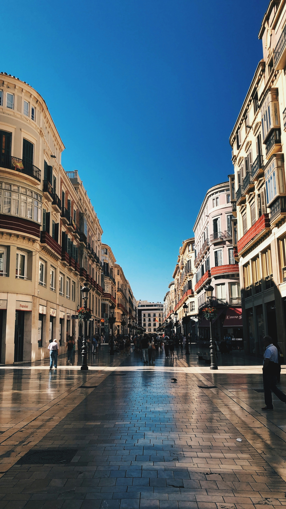

Vista desde los montes de Málaga

La Alcazaba

Mirador de la peña de Berlanga

El Faro

Rotonda con fuente en paseo del parque

La Manquita

Río Guadalmedina
Vista desde los montes de Málaga

Siempre concurrida, Calle Larios